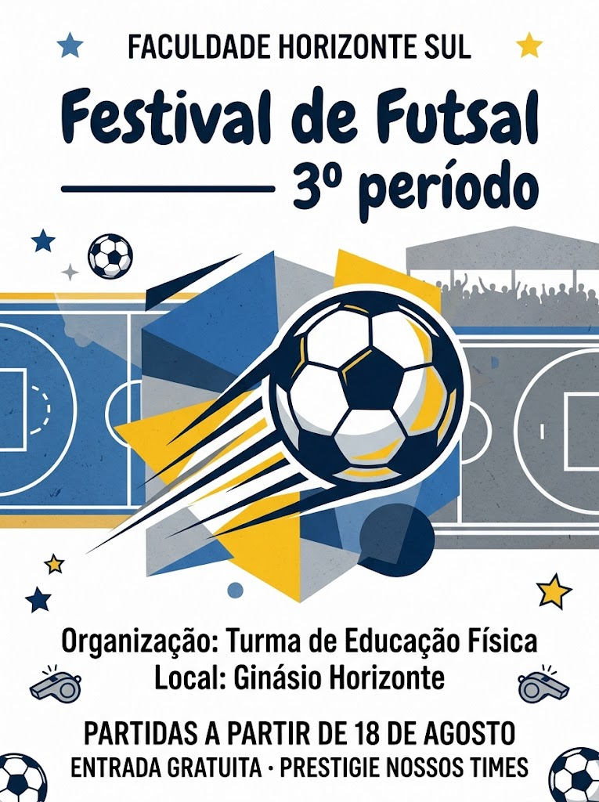

Fixado
Futsal à tarde e Flamengo à noite: domingo completo
19h05
5 publicações
@RafaVento7
Corrida, futsal e música para aquecer. Vila Cedro.
Fixado
Futsal à tarde e Flamengo à noite: domingo completo
19h05
Treino de corrida segunda e sexta às 6h30. Hoje quase esqueci a garrafa.
07h50
Rafa 7 comentou uma publicação
Nossa equipe de Educação Física organizou a rodada!
Festival de Futsal do 3º período no Ginásio Horizonte

13h25
Ontem fiz 20 e meu irmão tentou esconder o bolo atrás da mochila
09h30
Em resposta a @mila.torres.vc
Valeu por aparecer no jogo!
Foi ótimo, Mila! O Henrique também curtiu a partida.
10h10